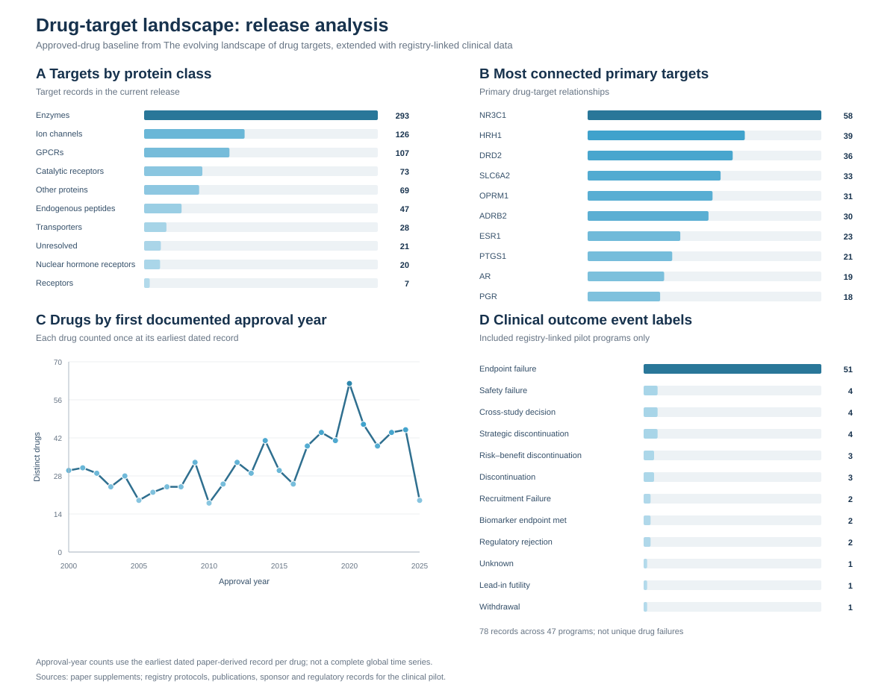

Drug-target landscape
This resource explores the relationship between therapeutic targets and drugs, combining the approved-drug baseline from The evolving landscape of drug targets with an additional TTD clinical-development dataset and FDA evidence. The integrated analysis and the original paper-based explorer are separate views with different coverage. FDA indication coverage in the original catalog is partial: as of October 13, 2026, 164 of 1,766 catalog drugs have a verified earliest indication; 1,602 remain pending review. Pending records are not evidence that a drug lacks FDA approval.
Paper baseline: The evolving landscape of drug targets. The integrated figures also use Therapeutic Target Database records and FDA evidence; the original explorer includes a separately sourced clinical pilot and FDA indication layer.
What has been added, and what is still uncertain?
Beyond the paper supplements, this release adds normalized target and drug identifiers, primary/secondary target roles, target-protein classification, registry-linked clinical programs and trial protocols (including one merged ClinicalTrials.gov NCT alias), outcome-review records, coverage-quality reporting, and an initial indication-level U.S. FDA layer for selected drugs. The cards above show current release counts. When a drug's primary mechanism cannot be assigned to one protein, it appears under an explicit unclear-target entry rather than a speculative protein. Clinical records are a separate, selected pilot evidence layer, not paper-derived data; their outcome evidence also draws on linked publications, sponsor disclosures, and regulatory records.
Interpretation limits: Target classes include non-core and unresolved-scope records, so all-target counts are not the paper's approved-target count. Approval records belong to drugs, not automatically to every linked protein or indication. Clinical event labels describe cited trial or program events, not unique failed drugs or proof that a protein target failed. Nine pilot programs remain held from headline analyses pending evidence review; an unknown stopping cause remains unknown.
Construction note: AI-assisted extraction, coding, and drafting contributed to this resource. The release passed scripted data and source-link checks, but its selected clinical pilot is not a systematic review; verify consequential interpretations against the linked primary sources.
A wider view of drug targets
Which targets have the most linked drugs—and how many of those drugs have a recorded approval? Select any bar to inspect the underlying records.
This analysis uses the audited combined dataset: 27,932 drug records, 3,156 targets and 40,915 relationships. TTD source snapshots are from 2024; the paper-derived baseline and other annotations have different coverage. A drug can appear under multiple targets. Some shared names remain unresolved, and protein families, non-protein targets and unclear categories are included.
Reading the counts: Approval is reported for a drug, can be outside the U.S., and does not establish that every linked target explains an approved use. No recorded approval is not proof of failure or absence of approval. The broad view includes source-reported investigative and terminated records without a specified phase, research compounds and radiolabeled ligands; it is not a count of clinical-trial drugs. The default phase/approval view includes links with a source-reported phase or approval and links involving an approved drug; an approved drug's individual target link can still be investigative.
Sources: The evolving landscape of drug targets; the Therapeutic Target Database (2024 resource publication); ClinicalTrials.gov; UniProt; IUPHAR/BPS Guide to PHARMACOLOGY; ChEMBL; NCATS GSRS; and FDA. Review the source and date before drawing conclusions.
Loading audited analysis…
Targets ranked by linked drugs
Each target is ranked by distinct linked drug records in the selected evidence view. The shade and length of each bar reflect the count; scales are recalculated for each chart. Select a bar for drugs, recorded statuses and source links.
Recorded approvals and targets with none recorded
Targets ranked by drugs with reported approval
Distinct linked drugs with a source-reported approval, ranked by the approved-drug count. This is a drug-level status, not proof that each associated target explains an approved use.
Linked drugs and drug-level approvals
Filled bars show all linked drugs; outlined bars show those with a source-reported approval. The approval may be for a different indication or target.
Many linked drugs, no approval recorded
Targets ranked by the number of linked records when none has a recorded approval in this dataset. This is not evidence of failure or proof that no approved drug exists.
Descriptive approval share
Approved drug records divided by all linked drug records in the currently selected view. Switch evidence view to compare denominators. These are descriptive shares, not the probability of clinical success.
Recent source evidence, 2015–2024
Study-date candidates use one or more selected registry date proxies linked to a target–drug record. Dates are not verified first clinical entry, and registry matches can be uncertain. Approval-year counts use a drug's earliest recorded year in the paper-derived events. These are different source layers with incomplete and unequal coverage, not a matched development cohort or approval rate. The TTD source snapshot is from 2024; later developments are not comprehensively captured.
When do linked study records appear?
Each cell counts distinct drug records linked to the target with a selected study-date candidate in that year; it does not count trials. Rows are the top targets by distinct candidates across the period. A drug may appear in several years. A dash means no linked candidate in this dataset, not no research activity. Select a cell to inspect its drugs and candidate studies.
Targets with selected study-date candidates
Targets linked to drugs with a paper-recorded approval year
Side-by-side source comparison
Top 20 by the larger count. Filled bars are study-date candidates; outlined bars are paper-recorded approval years. A drug can occur in both series, and the figures should not be added or divided.
Target classes and drug categories
Which kinds of drugs are linked to each target?
Rows are the most connected targets in the selected view; columns are source-derived drug categories. Cells count distinct linked drug records, and darker colors indicate higher counts. “Unknown” is retained rather than guessed. Select a cell to see its drugs.
Target classes
Counts are distinct targets with at least one link in the selected view. Kinases are shown separately from other enzymes. Select a bar to filter.
Drug categories
Counts are distinct linked drugs, including unknown classifications. Select a bar to filter.
Disease areas
Counts are distinct drugs with a source-reported disease and at least one target link in the selected view. In the phase/approval view the disease record must also have a qualifying source status. Broad groups use available ICD-11 codes; unsupported codes remain unclassified. Select a group to see original disease names and drugs. These separate associations do not establish a drug–target–disease mechanism; a drug may appear in several disease areas.
Which disease terms share linked drugs?
Circles are connected disease term/group pairs selected from the 120 most frequent in the broad source view. Circle size represents the number of distinct linked drug records; color represents the broad ICD-11 group. A line means the terms share at least three drug records, representing at least 3% of their combined distinct drugs. Filters recalculate the lines; some circles may then be isolated. Select a circle or line to inspect the drugs.
The force-directed layout is arranged for readability; proximity is not a biological distance. The network is not UMAP and does not count clinical trials or establish approved indications. Shared drug records do not prove that the terms were studied in the same trial or treated through the same target.
Earlier integrated analysis (different source subset)
Drug development across targets
Which targets are linked to the most drugs in this selected study-record dataset, and how many of those drugs have a reported approval? Select a target to inspect the records.
How to read these analyses. Trial-linked candidates combine the TTD set selected using study records from 2015–2024, exact-name registry candidates from the ChEMBL discovery layer, and directly reviewed study links. The name-matched candidates are not individually verified. Approved-only drugs from the paper baseline are also included, without restricting their approval dates. Approvals reported by TTD or the paper may be outside the U.S.; reviewed FDA evidence is shown separately. FDA labels may be historical, and approval of an individual indication can change. Approved drugs are included among developed drugs. Missing approval does not establish failure or lack of approval. Drug identities are partially deduplicated, and target links do not establish which target explains every approved indication.
Sources: The evolving landscape of drug targets; Therapeutic Target Database (2024 source snapshot); ChEMBL; UniProt (protein classification, CC BY 4.0); ClinicalTrials.gov; and FDA records. FDA evidence coverage is incomplete.
Loading integrated analysis…
Investigated and approved drugs by target
Blue counts distinct drugs associated with this target that were selected using the study-record sources; some study matches are unverified candidates. In the right chart, orange counts how many of those same drugs also have a source-reported approval. For example, blue 10 and orange 4 means four of those ten drugs have an approval recorded—it does not mean four of ten trials succeeded. Approvals can be outside the U.S., and approval of a drug does not establish the target responsible for its approved use.
Most-developed targets
Ranked by distinct linked developed-drug records, including trial-selected and approved-only drugs. The approved count is a subset of the developed count.
Targets linked to approved drugs
Ranked by all linked drugs reported approved. FDA evidence is a subset and is incomplete; an FDA label does not establish the relevance of every linked target.
Scatterplot: investigation and approval
Highly investigated targets and recorded approvals
The default checks all linked approved drugs, including approved drugs outside the selected trial set. The alternative percentage uses only the selected trial set as its denominator; it does not include approved drugs missing from that set and is not a success probability. “None recorded” is not proof that a target has no approved drug.
Disease areas
Broad groups use a documented, conservative ICD-11 chapter mapping; terms without a supported mapping remain unclassified. Select a group to see the original disease terms. These two views do not establish a specific drug–target–disease mechanism.
Target protein classes
Source-reported mechanisms
Source-reported development status
Drug–target links without a primary or secondary label
“Primary” and “secondary” describe whether a particular drug–target link is labeled as a main or additional target. For example, a CD19 link here means its source did not assign that drug–CD19 relationship either label; it does not mean CD19 lacks a biological function or that the association is unknown. These links appear in the all-links view and remain visible here when the primary filter is selected.
Original paper-based catalog summary
These counts describe the original paper-based dashboard, which has different coverage from the integrated analysis above.
Explore by target protein class
Start with a protein class, then select a target to see the drugs and development history connected to it. In a target profile, select a drug name to explore all of its linked targets. Pilot-program counts describe the small, selected set in this dashboard; zero does not mean that no clinical trials or drug programs exist.
Scope changes the class counts and target list below; the analysis figures later on this page always show their stated populations.
All target records
Paper baseline and previous release analyses
Descriptive analyses of the current release. These are counts of records and relationships, not estimates of biological importance or clinical success. Coverage and protein-class charts include the separately labeled non-core target records; the clinical outcome chart uses included pilot programs. Provisional registry stopping reasons are shown separately in the evidence-review section.

Explore by drug
Search by drug name or browse a first documented approval year to find linked targets and any pilot clinical programs. A drug selected from a target profile is saved in the page link. A drug-level approval record does not establish approval for every linked target mechanism.
U.S. FDA-approved indication: The dashboard shows one earliest documented indication per drug, with its approval date, eligible patient group or mutation, and FDA label. Coverage is loading. Some entries are still being checked against the original approval record; other drugs are marked not yet curated, which does not mean they lack U.S. approval. Linked labels are dated snapshots; consult FDA for subsequent revisions.
Download the matching drugs as one row per drug–target relationship. A drug with several targets appears on several rows; an approval record belongs to the drug, not automatically to every target link.
Explore the broader clinical-stage source landscape
Exploratory source snapshot, not the 2000–June 2025 cohort. These are drugs with ChEMBL source-reported mechanisms and a maximum development phase of I or later, linked to human single proteins in this catalog. The current source release can include drugs or evidence after the historical cutoff. It includes drugs at source phase 4; this does not establish U.S. FDA approval. Counts do not establish the timing of clinical entry, trial-specific target relevance, or a drug's current status.
A drug can appear under multiple targets, and repeated mechanism records are counted once per drug–target pair in the chart. Family, complex, nonhuman, and unmatched target records are not represented here. Sources: ChEMBL, CC BY-SA 3.0; ClinicalTrials.gov; and, where shown, existing FDA-curated records. Select a bar or search a target or drug to inspect the source records.
Trial and FDA links are name-match candidates. Registry trial dates are study-level, not necessarily the start of this drug or arm. Registry status is current at retrieval and does not establish a drug's outcome at the cutoff. FDA indication links require drug-identity review. No matching trial or FDA record does not mean the drug has no trials or approval.
Investigational drug pilot: source candidates
Six-target discovery intake from ChEMBL, not a clinical-entry cohort or a count of drugs pursued between 2000 and June 2025. A source-reported phase or mechanism does not establish a qualifying trial, eligible monotherapy arm, first clinical entry, FDA approval, or a trial-specific target. Family and complex targets are not yet included. The broader ranking and matched FDA outcomes require further review.
Data: ChEMBL, licensed CC BY-SA 3.0. Source records and their references are available through each drug link.
Browse clinical programs by phase and outcome
Registry-linked pilot programs, not an exhaustive list of drug failures. Included evidence is shown first; records needing review can be selected separately. An outcome label describes its cited event, not a failure attributable to every linked protein.
Filter choices are saved in the page link.
CSV export includes one row per outcome event for every matching pilot program (or one blank-event row if none). Multiple trials for one program are listed together. Needs-review records remain provisional; this is not a comprehensive registry export.
Alphabetical target table
An alternate list view of the targets above. Headline counts use primary drug-target relationships.
Data status
Clinical development evidence review
Registry stopping text is surfaced as a review aid. Candidate reasons are not treated as curated facts until manually verified. A completed mechanistic or safety study is not automatically labeled a clinical failure; records can remain unknown when the available evidence does not support a failure taxonomy.